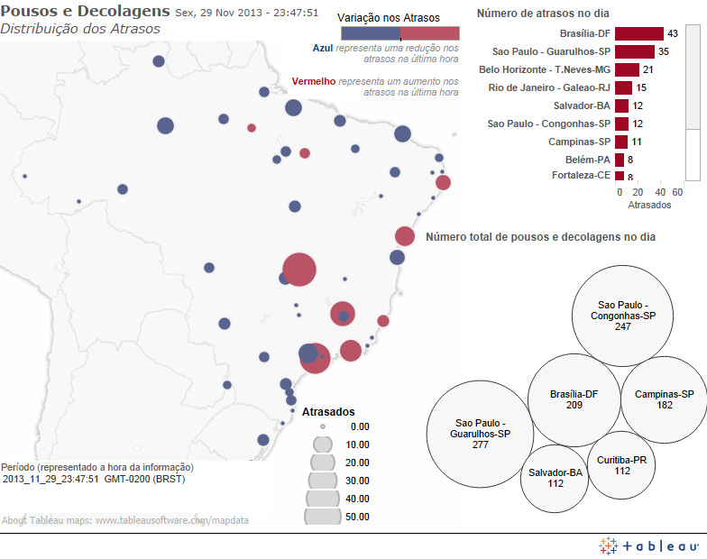

Mobilidade / Arquivo
Passo-a-Passo: Infográfico Aeroportos
O passo a passo do coletor que transformou os boletins da Infraero em uma série histórica.
O boletim original incluído permite reproduzir a extração em Python e comparar a saída com os dados publicados.
Publicação original
No post re-inaugural sobre atrasos em aeroportos, levantei 4 etapas primárias para a confecção do infográfico que me custaram algumas horas:
1.i) Qual linguagem de programação utilizar para conseguir os dados?
1.ii) Onde armazenar o programa?
1.iii) Como fazer esse código rodar de hora em hora?
1.iv) Onde armazenar os dados?
Acabei explicando para algumas pessoas como superei essas questões, mas nada mais justo que democratizar o acesso à informação.
Em primeiro lugar é importante notar o denominador comum das quatro questões: o fato de não ter a menor ideia sobre como resolver esse problema. A resposta lógica para esse tipo de impasse é usualmente o Google, mas no caso de programação, funciona também pesquisar nos arquivos do Stack Overflow (o Stack Overflow é um site de perguntas e respostas direcionadas para programação) e de fato o site foi fundamental para conseguir superar o problema de coleta de dados.
1.i) e 1.ii) Embora tenha alguma noção de programação, tenho pouca familiaridade com linguagens usualmente utilizadas para interação com websites e, portanto, esse era o ponto mais complicado. Abracei de cara a primeira solução que pareceu razoável, e por sorte suficiente: o Google Apps Script. Conforme definido pelo site:
Leia a citação na publicação originalOu seja, a função primordial é a otimização do o uso das ferramentas já disponibilizadas pelo Google; mas é possível utilizá-lo para acessar websites e realizar algum tipo de interação com eles e, no meu caso, guardar informações relevantes. Bastava assim ter uma conta no Google, entrar no Script e armazenar um código, sem a necessidade de instalar um programa ou usar um servidor.
Usando o Stack Overflow descobri que a função UrlFetchApp possibilita obter o código-fonte de qualquer página desejada de maneira que eu poderia “armazenar” a tabela de atrasos da Infraero uma vez que ela se encontra no meio desse código. Concretamente, o programa
function main() {
var url = "http://www.google.com";
var resp = UrlFetchApp.fetch(url).getContentText();
}
salvaria na variável resp o código-fonte da página principal do Google. Para os que não possuem familiaridade com o assunto, o código-fonte corresponde ao código html da página visitada, podendo ser obtido a partir do clique com o botão direito em qualquer página da web e da seleção da opção “código-fonte”.
1.iii) Como disse, tive sorte da primeira solução ser suficiente para conseguir as informações do site da maneira que queria. Mais do que isso, o Google Apps Script possui uma funcionalidade chamada Time-driven triggers que permite estabelecer “acionadores” para qualquer programa armazenado, permitindo que ele rode na periodicidade desejada (no meu caso, de hora em hora). Ou seja, em algumas horas encontrei soluções satisfatória para praticamente todos os problemas que pareciam intransponíveis para mim.
1.iv) A última grande barreira era a armazenagem dos dados. Lembrando que a função principal do Google Apps Script é “do new and cool things with Google Apps like Docs, Sheets, and Forms”, percebi que a maneira mais simples seria armazenar o conteúdo da página da Infraero obtido com a função UrlFetchApp em uma planilha do Google Docs e tratá-lo futuramente no Excel. Embora não seja a maneira mais sofisticada (que provavelmente seria utilizar o javascript para selecionar o conteúdo exato que preciso e na organização mais funcional possível), armazenar o código-fonte da tabela correspondente a cada hora do dia em várias células foi suficiente para os meus propósitos.
O resultado final foi um programa armazenado no meu Google Drive, que acessa, de hora em hora, a página dos atrasos dos aeroporto nacionais e armazena a tabela disponível nessa página em uma nova célula de uma determinada planilha também armazenada no meu Google Drive. Ainda houve o trabalho final de realizar o tratamento dos dados e criar o infográfico; porém, mesmo sem entrar nesses detalhes acredito que a explicação acima já se configura como um estímulo para aqueles que quiserem realizar análises parecidas. Deixo abaixo um formulário para aqueles que quiserem maiores explicações ou maiores detalhes bem como o link para a versão mais atualizada do infográfico.

